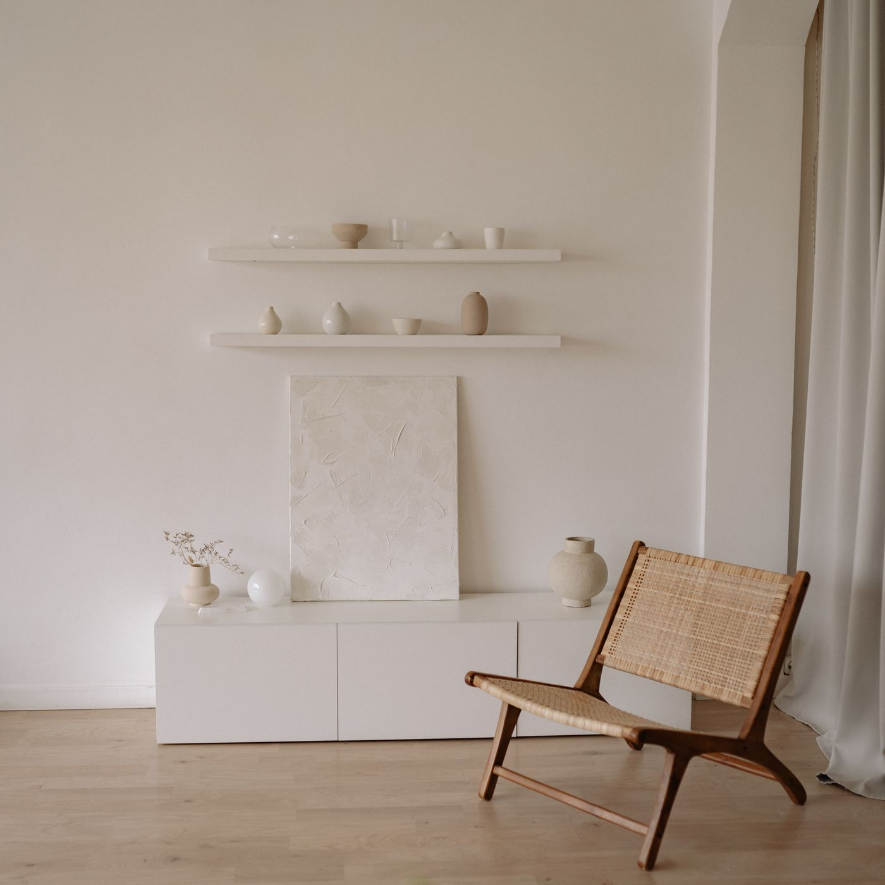

Ganzheitliche Osteopathie und systemisches Coaching mitten in der Lüneburger Altstadt. Mit Zeit, Ruhe und einem Plan, der zu Ihrem Leben passt.
Sanfte manuelle Behandlung bei Rücken-, Kopf- und Gelenkbeschwerden — von der Anamnese bis zum Übungsplan.
Mehr erfahrenSystemisches Einzelcoaching bei Stress, Erschöpfung und Veränderung. Strukturiert, vertraulich, wirksam.
Mehr erfahren
10 Minuten, in denen wir klären, ob und wie ich Ihnen helfen kann. Unverbindlich und ehrlich.
Termin sichern„Osteopathie ist für mich Medizin mit den Händen — keine Weltanschauung. Ich behandle, was ich befunden kann, und sage ehrlich, was ich nicht kann.“
Seit über 14 Jahren begleite ich Menschen, deren Körper Signale sendet, die im Alltag zu lange überhört wurden. In meiner Praxis verbinde ich Osteopathie mit systemischem Coaching. Denn ein verspannter Nacken hat oft mehr mit dem Terminkalender zu tun als mit der Matratze.
„Nach zwei Jahren Rückenschmerzen war ich nach vier Terminen praktisch beschwerdefrei. Frau Brandt nimmt sich Zeit, erklärt alles. Ich habe mich zum ersten Mal wirklich verstanden gefühlt."
„Die Kombination aus Osteopathie und Coaching ist genau das, was mir gefehlt hat. Mein Tinnitus ist deutlich leiser geworden, und mein Kopf auch."
„Wunderschöne Praxis, herzliche Atmosphäre, Termine ohne wochenlanges Warten. Ich war in der Schwangerschaft da und komme jetzt zur Rückbildung wieder."
Termine meist innerhalb von 7 Tagen, auch früh morgens und abends nach Vereinbarung.